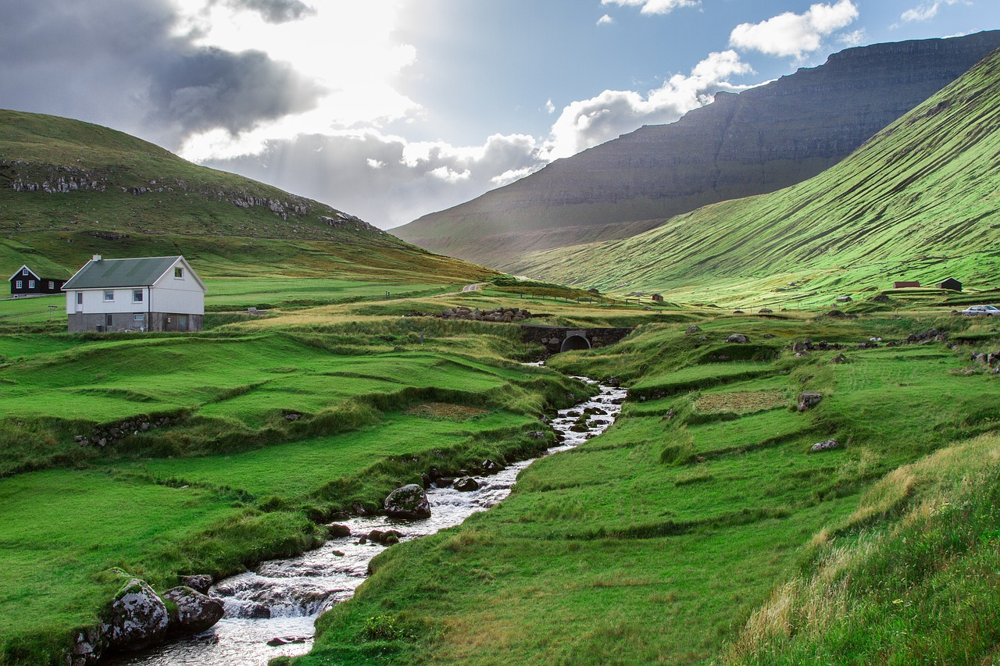
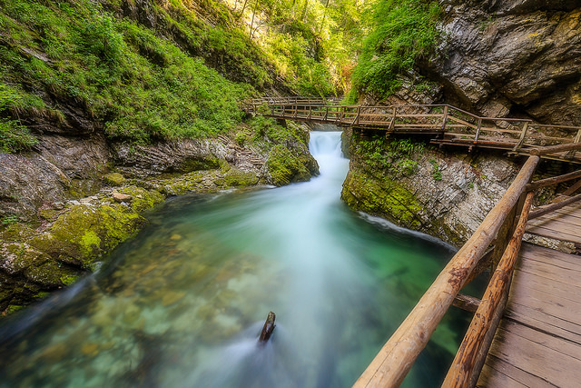
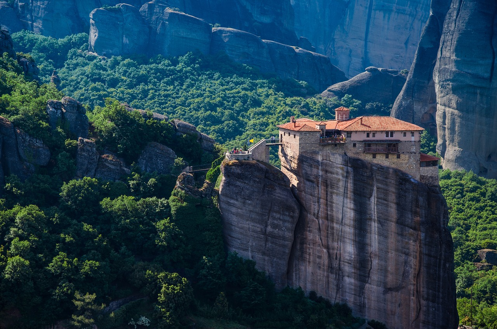
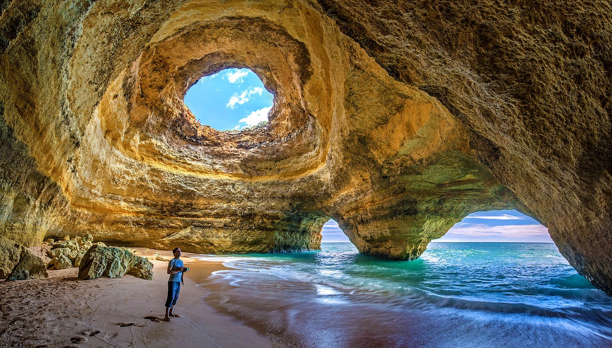
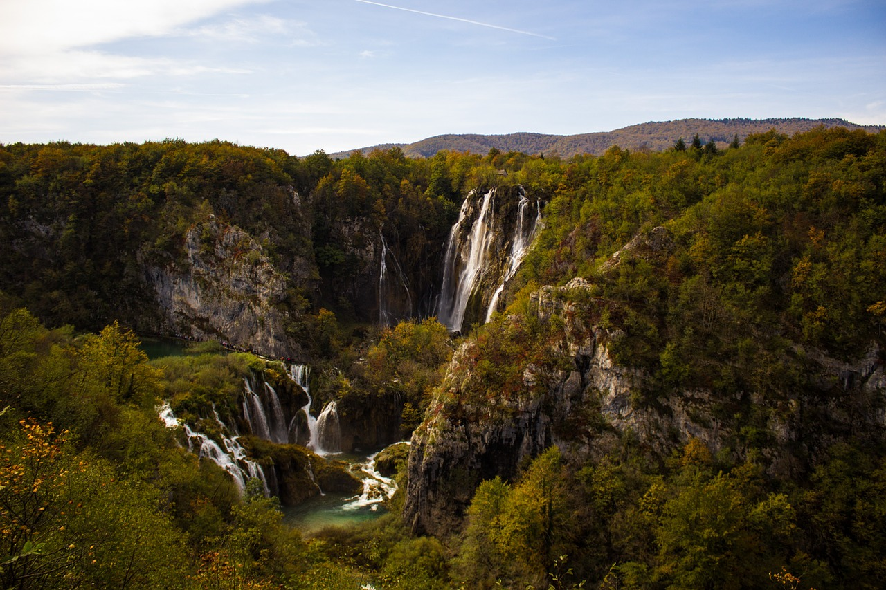

Les Îles Féroé, Danemark
Les îles Féroé sont un archipel de 18 îles situé dans l’Océan Atlantique Nord. Avec 1400 km2 d’espaces parfaitement préservés, ces îles sont de véritables paradis de nature pour les photographes de paysages. Vous pourrez également y trouver quelques villages de pêcheurs et de nombreuses espèces d’oiseaux.

La roche de Trolltunga, Norvège
Situé à 700 mètres au-dessus du lac Ringedalsvatnet, Trolltunga est l’une des falaises les plus spectaculaires de Norvège. Le lieu est devenu très populaire depuis l’apparition de nombreuses photos sur Instagram. De bonnes conditions physiques sont cependant nécessaires pour s’y rendre puisque le lieu est uniquement accessible par une randonnée de 23 km avec un dénivelé de 900 mètres.

La montagne Kirkujufell, Islande
La montagne Kirkujufell est sans aucun doute le lieu le plus célèbre d’Islande. Elle est un incontournable pour tout photographe et est facilement accessible depuis la route.

Le lac de Bled, Slovénie
Le lac de Bled est l’une des destinations les plus célèbres de Slovénie. Son château implanté au milieu du lac est l’un des plus beaux châteaux d’Europe. Il est particulièrement photogénique au moment du coucher ou du lever du soleil, car les couleurs du ciel vont venir se refléter à la surface de l’eau.

Les Gorges de Vintgar, Slovénie
La Gorge de Vintgar est située dans le parc national du Triglav près de Bled en Slovénie. La gorge de 1,6 kilomètre de long est accessible en dehors des périodes hivernales grâce à un sentier et des ponts en bois accrochés aux flancs rocheux. Le lieu est très dépaysant et devrait séduite tout amateur de pose longue.

Les cascades du Rhin, Suisse
Situées entre Neuhausen am Rheinfall (rive droite) et Flurlingen (rive gauche) en Suisse, les cascades du Rhin offrent un débit moyen de 750 m3/s d’eau qui vient franchir les rochers d’une hauteur de 23 mètres et sur 150 mètres de largeur. Elles sont classées parmi les plus grandes chutes d’eau d’Europe.

Les Météores, Grèce
Les Météores sont des falaises et des pitons rocheux sculptés par l’érosion au fil des millénaires. De nombreux monastères sont perchés au sommet de ces formations rocheuses, garantissant des photos saisissantes.

Le Mont-Saint-Michel, France
Avec près de deux millions et demi de visiteurs chaque année, le Mont-Saint-Michel est l’un des monuments les plus visités et les plus photographiés en France. L’architecture du Mont-Saint-Michel et sa baie forment des panoramas uniques et parfois dignes d’une peinture lorsque les conditions sont réunies.

Les îles Lofoten, Norvège
Les îles Lofoten sont un archipel appartenant à la Norvège. Elles sont situées au large de Bodø, au nord du cercle polaire, entre la mer de Norvège et le Vestfjord. Ces Îles sont une destination de rêve pour tout amateur de nature qui pourra y photographier l’un des plus beaux paysages d’Europe.

Les falaises de l’Algarve, Portugal
L’Algarve est une région du Portugal réputée pour son climat ensoleillé et ses eaux bleues, mais aussi pour la qualité de ses paysages et de sa nature protégée. La région est très réputée pour ses plages et ses criques ornées de sublimes falaises.

Les lacs de Plitvice, Croatie
L’Algarve est une région du Portugal réputée pour son climat ensoleillé et ses eaux bleues, mais aussi pour la qualité de ses paysages et de sa nature protégée. La région est très réputée pour ses plages et ses criques ornées de sublimes falaises.

Les chutes de Godafoss, Islande
Les chutes de Godafoss sont certainement les cascades les plus célèbres d’Islande et les plus belles d’Europe. Elles sont situées dans la région de Mývatn et forment une chute de 12 mètres de haut sur 30 mètres de largeur.

Château de Neuschwanstein, Allemagne
Le château de Neuschwanstein en Allemagne semble tout droit sorti d’un film de Disney. Il est situé sur un éperon rocheux haut de 200 mètres près de Füssen dans l’Allgäu.